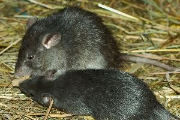

Hlodavec z čeledi myšovitých, který je často zaměňovaný s potkanem. Oproti němu má delší ocas a uši, ale celkově je subtilnější.
Krysa je obvykle tmavě zbarvená. Měří (bez ocasu) do 250 mm a váží do 250 g. Žije v sušších částech lidských obydlí a jiných staveb ve větších skupinách zahrnujících až 60 jedinců. Rozmnožuje se 2–3× ročně po celý rok. Nejaktivnější je za soumraku. Je všežravec, ale výrazně u ní převažuje rostlinná potrava – zrní, brambory, ovoce i zelenina.

Zpět do menu